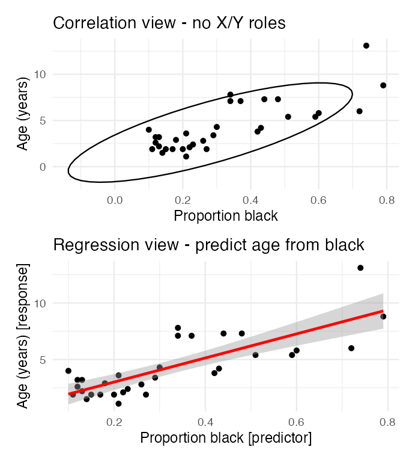
Relationships
Covered last time:
Note
✅ Where today sits on that map
Last week ended with a table mapping designs onto analyses. Today is its first row — one continuous predictor, one continuous response.
Everything after today adds predictors or changes their type. The machinery stays the same.
Two techniques, one idea — a straight line through a cloud of points:
This lecture runs over two class days: correlation first, regression second.
📥 Booby data 📥 Rope trick data 📥 Lion data 📥 Script skeleton (.R)
Note
📖 Reading
Whitlock & Schluter, Ch. 16 (Correlation) and Ch. 17 (Regression).
Gotelli & Ellison, Ch. 9 (Regression).
Warning
🗳️ Six times over the two days, you make the call
Six slides are marked 🗳️ DECIDE. Each asks a multiple-choice question, and I will not tell you the answer on that slide.
How it works: write your letter down — actually write it — then hold up fingers 1–4. If the room splits, turn to the person next to you, argue for ninety seconds, and we vote again. Nothing here is graded. The point is that you commit before you find out.
Correlation
Regression

Warning
⚠️ Regression does not earn you causation
lm(y ~ x) will fit a slope to any two numeric columns you hand it, including ones with no causal link at all. Putting a variable on the right-hand side is a decision you made, not a finding.
What licenses a causal claim is the study design — manipulation, randomization, controls — not the model you fit afterwards.
Last week’s inference gradient, in one line: the same lm() output supports a weak claim from an observational survey and a strong claim from a randomized experiment. The design decides which one you are allowed to write.
Note
Which do I report?
Correlation measures the strength and direction of a linear relationship between two numerical variables. It runs from −1 to +1:
The Pearson correlation coefficient:
\[r = \frac{\sum_{i}(X_i - \bar{X})(Y_i - \bar{Y})}{\sqrt{\sum_{i}(X_i - \bar{X})^2 \sum_{i}(Y_i - \bar{Y})^2}}\]
which is just
\[r = \frac{\text{Covariance}(X, Y)}{s_X \cdot s_Y}\]
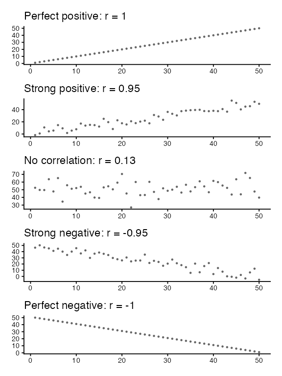
Four datasets, plotted on the right. No correlation coefficients shown — on purpose.
Which panel has the Pearson correlation closest to zero?
(a) Panel A
(b) Panel B
(c) Panel C
(d) Panel D
Warning
✍️ Write your letter down, then vote.
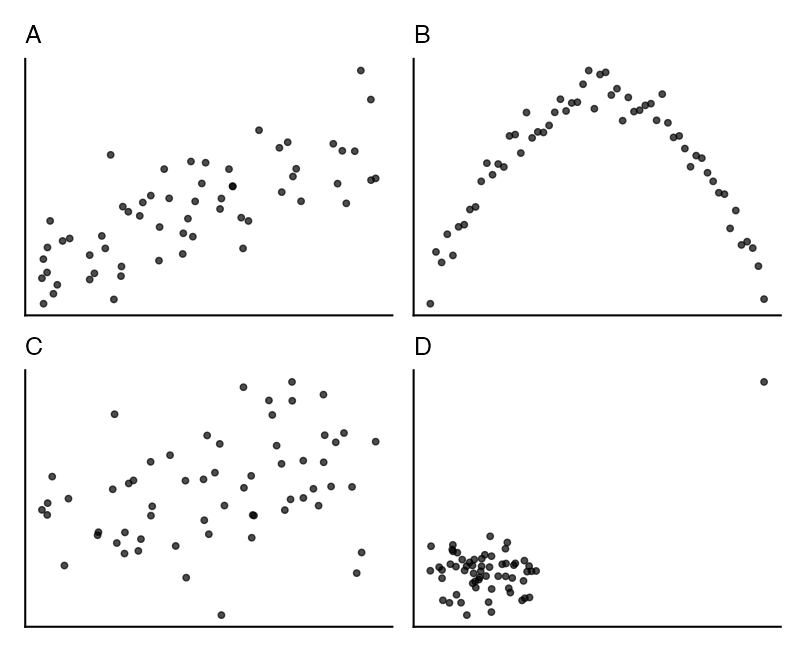
Important
✅ The answer is (b) — Panel B.
Panel B is the most tightly related pair on the slide: give me x and I can tell you y almost exactly. Its correlation is near zero anyway, because the relationship is an arch, not a line.
Panel C looks like the messiest, so most rooms vote (c). It has a weak but genuine linear trend, so its r sits farther from zero than B’s.
r measures one thing only: how close the points lie to a straight line. A perfect relationship with a curve in it reads as “no correlation.”
Panel D is the other warning — a single far-out point can manufacture a large r out of a cloud with no trend in it.
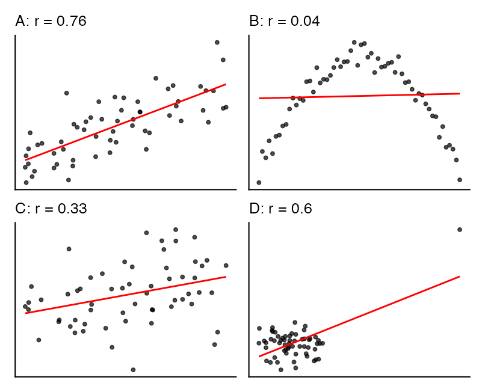
Always plot the data before you trust a correlation coefficient.
Nazca boobies (Sula granti): do the visits a chick receives from non-parent adults predict how aggressive it is as an adult?
Pearson's product-moment correlation
data: booby_df$visits_as_nestling and booby_df$future_aggression
t = 2.9603, df = 22, p-value = 0.007229
alternative hypothesis: true correlation is not equal to 0
95 percent confidence interval:
0.1660840 0.7710999
sample estimates:
cor
0.5337225 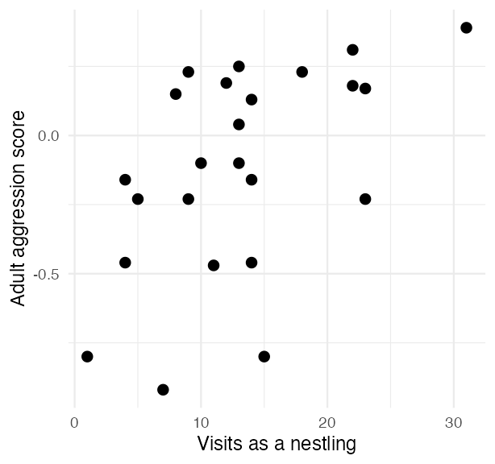
r = 0.534 — a moderate positive relationship, p = 0.00723.
In words: boobies visited more often as nestlings tend to be more aggressive adults. Nothing here says the visits caused it.
Note
🔮 Predict first
Next we run Shapiro-Wilk on both booby variables, then look at their histograms and QQ plots.
If the formal test and the picture disagree at n = 24, which would you trust?
Pearson correlation assumes:
The two tests do not agree with each other:
Now look at the pictures. No strong skew, points close to both QQ lines, and the scatterplot was straight rather than curved.
Important
✅ This is the case the last slide asked you to predict
At n = 24, a normality p of 0.047 is a coin-flip verdict, not evidence of a real problem. W&S report Pearson’s r for these data, and so do we.
Compare that with the next dataset, where the test and the picture agree that something is wrong.
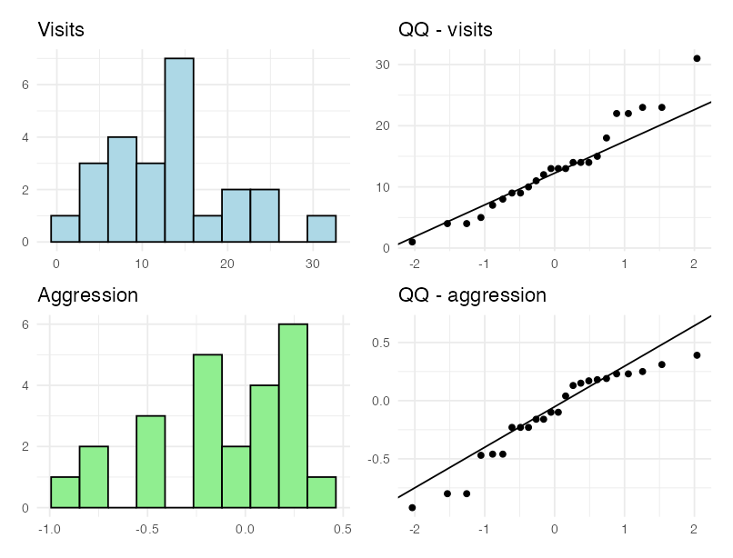
W&S Example 16.5: people who had seen the Indian rope trick were asked, years later, how impressive it was — on a subjective score.
That score is bounded and lumpy, and it fails Shapiro badly. Three options when normality fails:
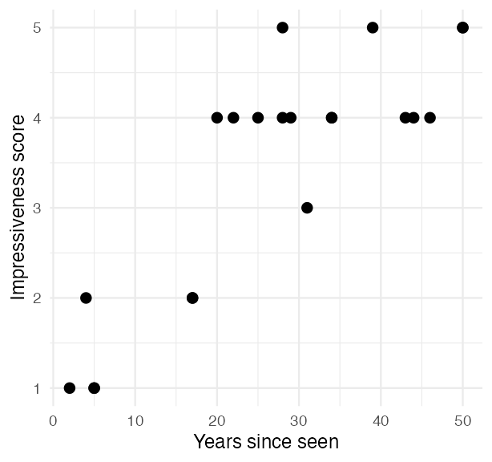
The longer ago someone saw the trick, the more impressive they remember it being.
Spearman replaces each value with its rank and correlates the ranks — so it needs no normality and is not thrown by one extreme value.
Square ρ the same way: ρ² = 0.615 — about 61.5% of the variation in the ranks.
Note
The cost of switching
You keep an honest p-value and lose the original units. ρ is about ranks, so it can no longer be read as “score per year.”
A colleague reports r = 0.82 between body size and fecundity across a set of populations.
You repeat the study, carefully, at one site — where the animals are all close to the same size — and get r = 0.31 from data that are every bit as clean.
What is the most likely explanation?
(a) The original result was a false positive
(b) Your sample size was too small
(c) Restricting the range of X shrank r, with the underlying relationship unchanged
(d) Measurement error in your study inflated r
Warning
✍️ One letter. Write it down.
Note
The question to ask
Did the relationship change — or did the slice of the world I looked at change?
Important
✅ The answer is (c).
Range restriction. r depends on the spread of X you sampled. Look at a narrow slice of a real relationship and r falls, even though the slope is unchanged. This is why correlations from studies with different ranges cannot be compared head to head.
Warning
⚠️ Attenuation
Measurement error in X or Y pushes r toward zero, never away from it. The true correlation is usually stronger than the one you observed — so (d) has the direction backwards.
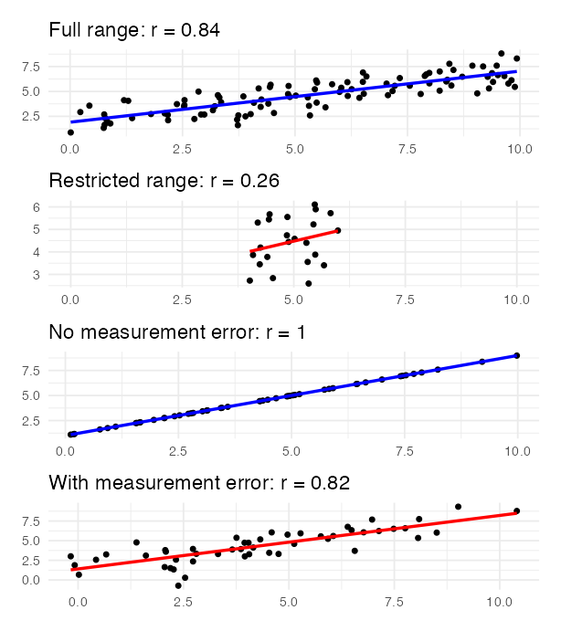
Note
✅ End of the correlation half
You can now run cor.test(), check its assumptions on the raw variables, switch to Spearman when they fail, and say what r and r² mean.
Next: the same cloud of points — but now we fit a line to it and ask what that line is made of.
Regression models the response Y as a straight-line function of the predictor X.
The population model: \(Y = \alpha + \beta X + \varepsilon\)
The sample equation: \(\hat{Y} = a + bX\), where a estimates α and b estimates β.
Method of least squares: of all possible lines, take the one that makes
\[\sum_{i=1}^{n}(y_i - \hat{y}_i)^2\]
as small as possible — the sum of the squared vertical distances.
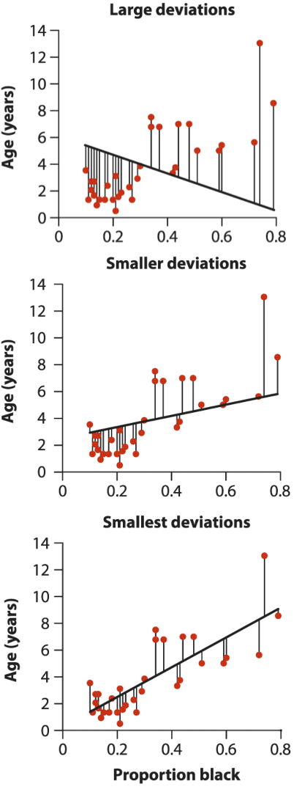
Least squares picks the third one.
Male lions accumulate black pigment on the nose as they age — so nose colour can age a lion in the field without anyone catching it.
(Intercept) proportion_black
0.8790062 10.6471194 Read the formula as response ~ predictor.
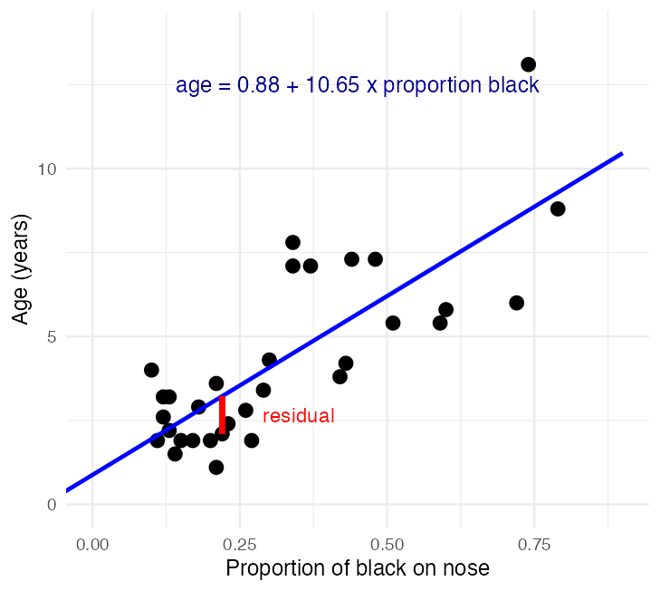
Call:
lm(formula = age_years ~ proportion_black, data = lion_df)
Residuals:
Min 1Q Median 3Q Max
-2.5449 -1.1117 -0.5285 0.9635 4.3421
Coefficients:
Estimate Std. Error t value Pr(>|t|)
(Intercept) 0.8790 0.5688 1.545 0.133
proportion_black 10.6471 1.5095 7.053 7.68e-08 ***
---
Signif. codes: 0 '***' 0.001 '**' 0.01 '*' 0.05 '.' 0.1 ' ' 1
Residual standard error: 1.669 on 30 degrees of freedom
Multiple R-squared: 0.6238, Adjusted R-squared: 0.6113
F-statistic: 49.75 on 1 and 30 DF, p-value: 7.677e-08\[\widehat{\text{age}} = 0.88 + 10.65 \times \text{prop. black}\]
Note
Notice
Correlating these same two variables and squaring r gives the same 0.624. Hold that thought — Part 5 explains why.
The fitted line is \(\widehat{\text{age}} = 0.88 + 10.65 \times \text{prop. black}\).
Which statement is correct?
(a) A lion’s nose darkens by 10.65 units for every year it ages
(b) Going from a nose 10% black to one 20% black predicts about 1.06 more years of age
(c) A newborn lion is predicted to be 0.88 years old, so the model is wrong
(d) 62.4% of lions are aged correctly by this equation
Warning
✍️ Write your letter down, then vote.
Note
Ask yourself
What are the units on this slope?
A slope is always units of Y per one unit of X — and here one unit of X is the whole range, from a clean nose to a fully black one.
Important
✅ The answer is (b).
The slope is 10.65 years per unit of proportion black, and one unit is the entire 0-to-1 range. A 0.1 change in blackness therefore predicts about 1.06 years.
(a) reverses the variables — that is the regression of blackness on age, a different line.
(c) misreads the intercept: it is 0.88 years at proportion black = 0, and the youngest lion measured was 1.1 years old, so X = 0 sits outside the data. The intercept anchors the line; it is not a claim about newborns.
(d) confuses R² with an accuracy rate. R² is variance explained, not the percentage of lions got right.
Warning
⚠️ Extrapolation
A fitted line says nothing about X values you never sampled, and the confidence band is widest exactly where you have no data.
Tip
🖐 The habit to build
Write every slope out as a sentence in the units of the data — “for every extra , Y changes by ” — before you write a word about significance.
\[b = \frac{\sum_i(X_i - \bar{X})(Y_i - \bar{Y})}{\sum_i(X_i - \bar{X})^2} \qquad a = \bar{Y} - b\bar{X}\]
The numerator is a sum of cross-products; the denominator is a sum of squares. Both are the same kind of quantity the ANOVA table is built from in a moment.
Both intervals sit on the same predicted age, and answer different questions:
The prediction interval is always wider: it carries the scatter of individual lions plus the uncertainty in the line itself.
Both are narrowest at \(\bar{X}\) and flare out toward the edges of the data.
Tilman et al. (2006): does a more diverse plant community produce more stable biomass? 161 plots, seeded with 1 to 16 species.
Estimate Std. Error t value Pr(>|t|)
(Intercept) 1.1982943 0.041298043 29.015766 2.075490e-65
species_number 0.0329259 0.004883691 6.742012 2.733315e-10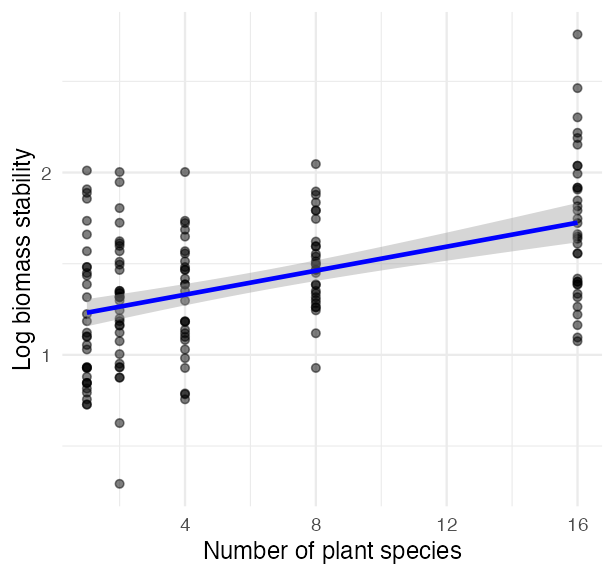
The hypothesis test is about the slope:
Slope = 0.0329 — log stability rises by about 0.033 per extra species, so a 16-species plot sits roughly 0.49 log units above a monoculture.
p = 2.73e-10 — strong evidence against a zero slope.
R² = 0.222 — diversity explains about 22.2% of the variation in stability. Real, and nowhere near the whole story.
Note
Significant ≠ large
A tiny p-value alongside R² = 0.22 is completely ordinary in ecology.
The p-value says the slope is not zero. R² says how much of the world it accounts for. Report both.
Take one data point. Its distance from the overall mean \(\bar{y}\) splits, exactly, into two pieces:
\[\underbrace{(y_i - \bar{y})}_{\text{total}} = \underbrace{(\hat{y}_i - \bar{y})}_{\text{explained}} + \underbrace{(y_i - \hat{y}_i)}_{\text{left over}}\]
Square those deviations and add them up over every point, and the same split holds for the whole dataset:
\[SS_{total} = SS_{regression} + SS_{residual}\]
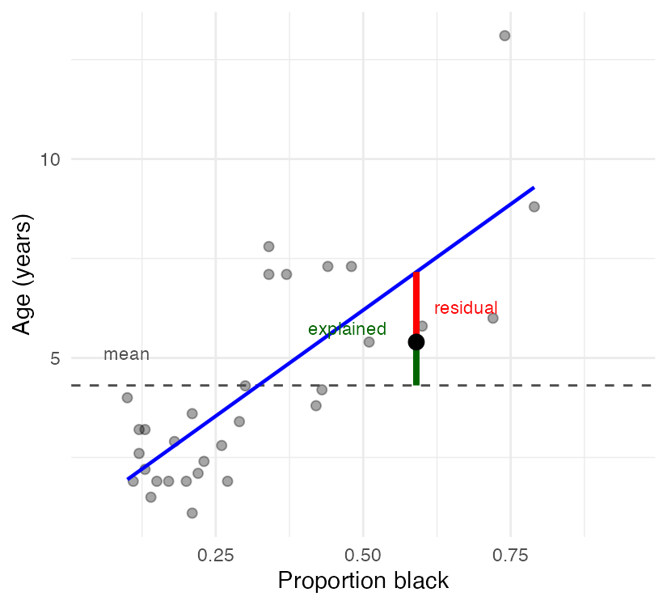
Four fitted regressions, on the right.
Which statement is true?
(a) \(SS_{regression}\) is larger in (d) than in (c)
(b) \(SS_{residual}\) is larger in (b) than in (a)
(c) \(SS_{total}\) is larger in (a) than in (b)
(d) \(SS_{residual}\) is zero in (c)
Warning
✍️ One letter. Write it down, then argue it with your neighbour.
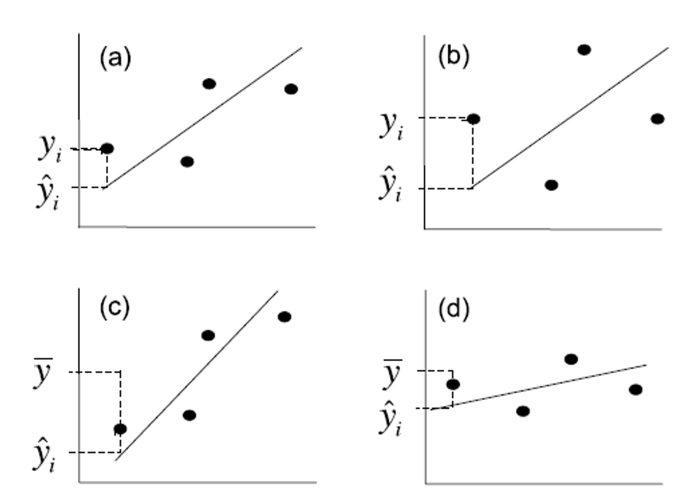
Important
✅ The answer is (b).
\(SS_{residual}\) is the scatter around the line, and the points in (b) sit farther off their line than those in (a).
(a) is backwards: \(SS_{regression}\) grows with how steeply the fitted line climbs, and (c) is steeper than (d).
(c) is the trap — \(SS_{total}\) does not depend on the fit at all. It is the spread of Y around its own mean, and the line has nothing to do with it.
(d) would require every point to sit exactly on the line.
Note
The three pictures to keep
A fit is good when the line does a lot of climbing and the points stay close to it.
total regression residual
222.08719 138.54398 83.54321 [1] 222.0872138.5 + 83.5 = 222.1 — exactly.
And the share the line accounts for:
\[R^2 = \frac{SS_{regression}}{SS_{total}} = \frac{138.5}{222.1} = 0.624\]
Important
✅ This is where R² comes from
R² is not a separate statistic. It is the regression sum of squares as a fraction of the total — and with one predictor it is exactly the correlation coefficient squared.
Every number in that table you have now built by hand:
Note
This table has a shape, not a topic
The identical five columns show up for one-way ANOVA, two-way ANOVA, nested ANOVA and ANCOVA. Only the rows change.
A sum of squares keeps growing as you add data, so it cannot be compared across studies. Divide by degrees of freedom and you get a mean square — a variance, which does not grow with n:
\[MS = \frac{SS}{df} \qquad F = \frac{MS_{regression}}{MS_{residual}}\]
Sums of squares add up. Mean squares do not.
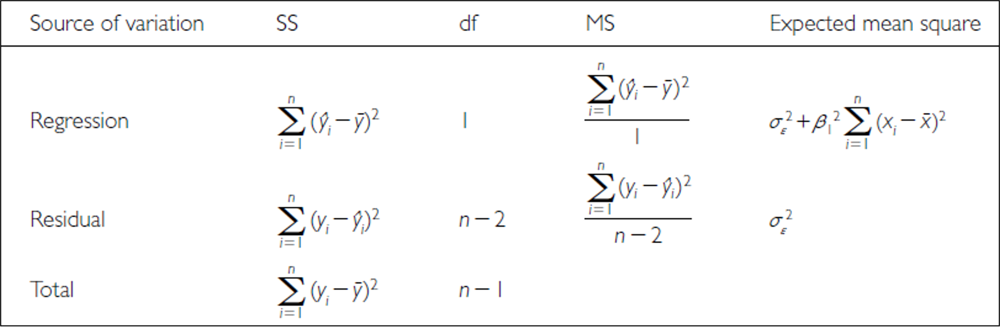
You repeat the lion study and come back with 64 lions instead of 32. The relationship is identical — same slope, same scatter around the line.
Compared with the original analysis, what happens?
(a) \(SS_{total}\) roughly doubles, and \(MS_{residual}\) roughly doubles with it
(b) \(SS_{total}\) roughly doubles, but \(MS_{residual}\) stays about the same
(c) Both stay about the same — doubling n changes neither
(d) \(SS_{total}\) stays about the same and \(MS_{residual}\) halves
Warning
✍️ Write your letter down. This one decides whether you can read the table.
Note
The question to ask
Which of these is a total, and which is an average?
Important
✅ The answer is (b).
\(SS_{total}\) is a sum over every observation, so twice the data is roughly twice the sum. \(MS_{residual}\) is that sum divided by its degrees of freedom — an average squared deviation — so it estimates the same σ² no matter how many lions you measure.
That is exactly why the table converts sums of squares into mean squares before testing anything. You cannot compare two sums built from different amounts of data; you can compare two variances.
Tip
🖐 What doubling n actually buys
σ² does not change, but the standard error of the slope shrinks with √n — so F rises and the confidence band tightens.
More data does not reduce the scatter in nature. It reduces your uncertainty about the line running through it.
For the lion model, all of these are the same test:
| Route | Value |
|---|---|
| t on the slope | 7.053 |
| t² | 49.75 |
F from anova() |
49.75 |
| p, either way | 7.68e-08 |
t² = F. The t-test on a slope and the F-test in the ANOVA table are one test asked two ways — and \(r^2 = SS_{reg}/SS_{total}\) ties both back to the correlation half of this lecture.
Important
✅ Why this is the most important slide today
Every analysis for the rest of the course is this same partition with more rows:
Learn to read this table once and you can read all of them.
Simple linear regression assumes:
Stated formally: the error \(\varepsilon_i\) is normal, with a mean of 0 and the same variance, at every value of x.
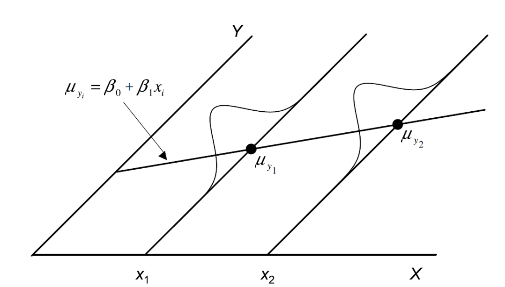
Every assumption check from here on uses the residuals, not the raw data. That is the single most common mix-up in regression.
The error \(\varepsilon_i\) is estimated by the residual \(e_i = y_i - \hat{y}_i\) — the same red segment you have seen on every lion plot today, and the same quantity that got squared and summed to build \(SS_{residual}\).
Least squares already made these as small as possible. The diagnostics ask whether what is left over looks like random noise.
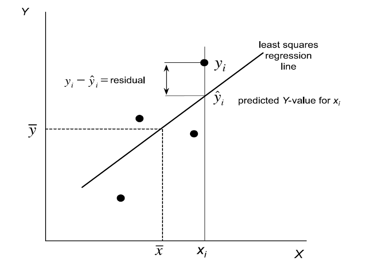
What you want: a shapeless cloud, scattered evenly above and below the horizontal line at zero.
What is a problem: any curve in the trend line. A U-shape or an arch means a straight line is the wrong shape for these data — the exact failure Panel B showed back in the correlation half.
The plot doubles as a homoscedasticity check: if the cloud fans out or funnels in from left to right, the variance is not constant.
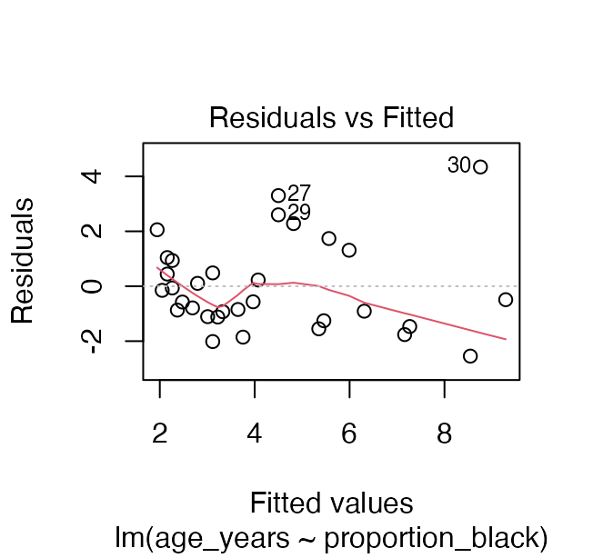
The QQ plot compares your residuals with what perfectly normal residuals would look like.
What you want: points hugging the diagonal.
What is a problem: systematic curvature, or points peeling away at the ends. Tails are where non-normality shows up first, and tails are what p-values depend on.
Note we check the residuals, not age_years itself. The raw ages are right-skewed, and that is allowed. It is the residuals that have to behave.
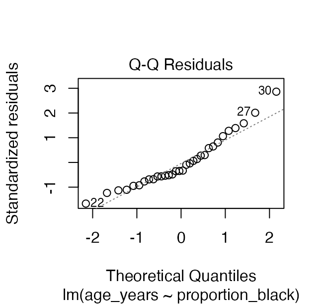
Shapiro-Wilk normality test
data: residuals(lion_model)
W = 0.93879, p-value = 0.0692residuals(model) — not lion_df$age_years. Testing the raw response is a different, and usually wrong, question.
Note
H₀ is “the residuals ARE normal”
So a large p-value is the good outcome.
Warning
⚠️ Do not let this test overrule your eyes
At small n it has almost no power to detect a real problem; at large n it flags departures far too small to matter. Read the QQ plot first and use the test to support it — not to replace it.
When an assumption fails:
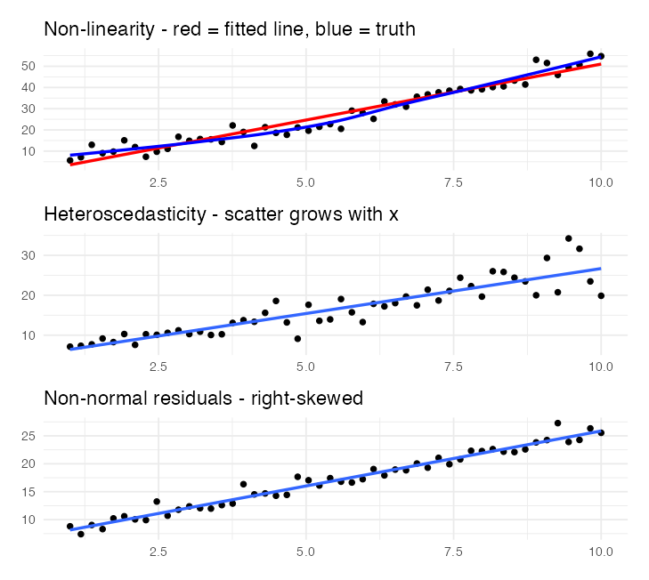
Gotelli & Ellison’s Galápagos data: 17 islands, plant species richness against island area, both log-transformed. The fit is solid — R² = 0.585, p = 3.50e-04.
Now one more point arrives: a large island reported with very few species (red).
What does that single point do?
(a) Very little — one point in 18 cannot matter much
(b) It raises R², because the range of X just got wider
(c) It roughly halves R² and pushes p to the edge of significance
(d) It can change R² but not the slope
Warning
✍️ One letter, before the next slide.
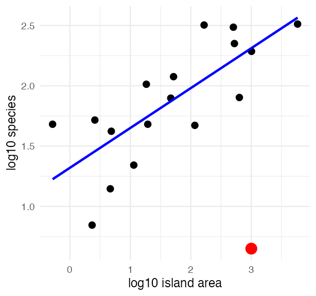
galap_plot <- galap_df %>%
mutate(log_area = log10(area_km2),
log_species = log10(n_species))
# a big island reported with very few species
galap_bad <- galap_plot %>%
add_row(log_area = 3, log_species = 0.65)
clean_model <- lm(log_species ~ log_area, galap_plot)
bad_model <- lm(log_species ~ log_area, galap_bad)
tibble(data = c("17 islands", "plus the suspect point"),
slope = c(coef(clean_model)[2], coef(bad_model)[2]),
r2 = c(summary(clean_model)$r.squared,
summary(bad_model)$r.squared))# A tibble: 2 × 3
data slope r2
<chr> <dbl> <dbl>
1 17 islands 0.331 0.585
2 plus the suspect point 0.233 0.228Important
✅ The answer is (c).
One point out of 18 cuts R² from 0.58 to 0.23 and moves p from 3.50e-04 to 0.0449 — from convincing to barely publishable. The slope drops too, so (d) is out.
It is influential because it lies far out in X and far off the trend. Cook’s distance flags it at once — that is what panel 4 of plot(model) is for.
No diagnostic can tell you whether it is a typo or a real island. That takes going back to the data sheet.
Over the two days you:
cor.test()lm() and read the slope in the units of the dataImportant
✅ The one idea to keep
A line can be fitted to any two numeric columns. What makes it trustworthy lives in the residuals; what makes it interpretable lives in the sums of squares. Neither lives in the p-value.
Note
Up next — Multiple Regression
More than one predictor, predictors correlated with each other, and choosing between competing models. Same table, more rows.
When code breaks — and it will, that is normal:
lm() written y ~ x (response first)? Did you pass residuals(model) where a model was expected, or vice versa??function_name opens the help pageNote
✅ Key idea
Every working scientist googles error messages daily. Getting stuck is not failing — it is the job.